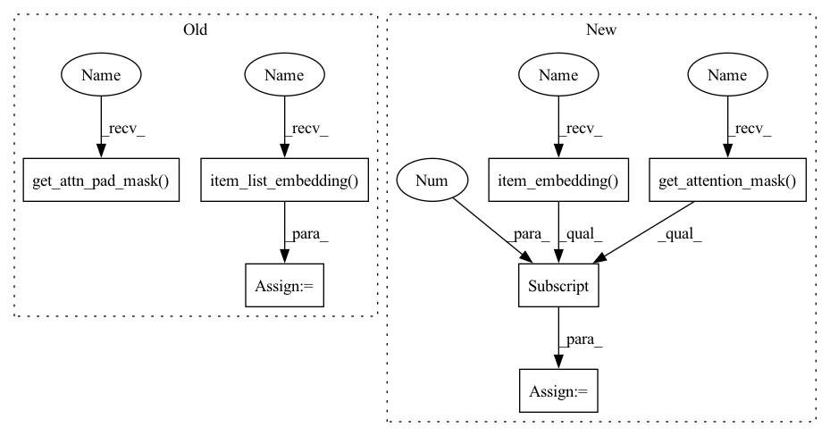

Pattern ID :26148

Before Change
return self.item_list_embedding.weight.t()
def forward(self, interaction):
item_list_emb = self.item_list_embedding(interaction[self.ITEM_ID_LIST])
position_list_emb = self.position_list_embedding(interaction[self.POSITION_ID])
behavior_list_emb = item_list_emb + position_list_emb
behavior_list_emb_drop = self.emb_dropout(behavior_list_emb)
key_padding_mask = self.get_attn_pad_mask(interaction[self.ITEM_ID_LIST], interaction[self.ITEM_ID_LIST])
look_ahead_mask = self.get_attn_subsequence_mask(interaction[self.ITEM_ID_LIST])
mask = torch.gt((key_padding_mask + look_ahead_mask), 0)
attn_weights = []
attn_outputs = behavior_list_emb_drop
for i in range(self.num_blocks):
attn_outputs, attn = self.multi_head_attention(attn_outputs, attn_outputs, attn_outputs, mask)
attn_weights.append(attn)
attn_outputs = self.feedforward(attn_outputs)
long_term_prefernce = self.gather_indexes(attn_outputs, interaction[self.ITEM_LIST_LEN] - 1)
predict_behavior_emb = self.layer_norm(long_term_prefernce)
return predict_behavior_emb, attn_weights
def get_attn_pad_mask(self, seq_q, seq_k):
After Change
position_ids = position_ids.unsqueeze(0).expand_as(item_list)
position_embedding = self.position_embedding(position_ids)
item_emb = self.item_embedding(item_list)
input_emb = item_emb + position_embedding
input_emb = self.LayerNorm(input_emb)
input_emb = self.dropout(input_emb)
extended_attention_mask = self.get_attention_mask(item_list)
trm_output = self.trm_encoder(input_emb,
extended_attention_mask,
output_all_encoded_layers=True)
output = trm_output[-1]
output = self.gather_indexes(output, interaction[self.ITEM_LIST_LEN] - 1)
return output // [B H]
def calculate_loss(self, interaction):
In pattern: SUPERPATTERN
Frequency: 3
Non-data size: 7
Instances
Fragment ID: 78822066
Project Name: rucaibox/recbole
Commit Name: ffcc134b950b0452fc3002c303ddab36e6f9738c
Time: 2020-10-08
Author: 838803621@qq.com
File Name: recbox/model/sequential_recommender/sasrec.py
M Class Name: SASRec
N Class Name: SASRec
M Method Name: forward(2)
N Method Name: forward(2)
M Parent Class: SequentialRecommender
N Parent Class: SequentialRecommender
M File Name: recbox/model/sequential_recommender/sasrec.py
N File Name: recbox/model/sequential_recommender/sasrec.py
M Start Line: 63
M End Line: 78
N Start Line: 98
N End Line: 115
'>
Before Change
assert self.weight >= 0 and self.weight <= 1
alias_inputs, A, items, mask = self.get_slice(interaction)
item_list_len = interaction[self.ITEM_LIST_LEN]
hidden = self.item_list_embedding(items)
hidden = self.gnn(A, hidden)
alias_inputs = alias_inputs.view(-1, alias_inputs.size(1), 1).expand(-1, -1, self.embedding_size)
seq_hidden = torch.gather(hidden, dim=1, index=alias_inputs)
// fetch the last hidden state of last timestamp
ht = self.gather_indexes(seq_hidden, item_list_len - 1)
a = seq_hidden
padding_mask = self.get_attn_pad_mask(mask, mask)
for i in range(self.num_blocks):
a = self.self_attention(a, padding_mask)
at = self.gather_indexes(a, item_list_len - 1)
predict_emb = self.weight * at + (1 - self.weight) * ht
After Change
def forward(self, item_seq, item_seq_len):
assert self.weight >= 0 and self.weight <= 1
alias_inputs, A, items = self.get_slice(item_seq)
hidden = self.item_embedding(items)
hidden = self.gnn(A, hidden)
alias_inputs = alias_inputs.view(-1, alias_inputs.size(1), 1).expand(-1, -1, self.embedding_size)
seq_hidden = torch.gather(hidden, dim=1, index=alias_inputs)
// fetch the last hidden state of last timestamp
ht = self.gather_indexes(seq_hidden, item_seq_len - 1)
a = seq_hidden
attention_mask = self.get_attention_mask(item_seq)
outputs = self.self_attention(a, attention_mask, output_all_encoded_layers=True)
output = outputs[-1]
at = self.gather_indexes(output, item_seq_len - 1)
seq_output = self.weight * at + (1 - self.weight) * ht
return seq_output
'>
Fragment ID: 78822065
Project Name: rucaibox/recbole
Commit Name: 1714ed39db89b102bc46fc23155f92de0d8996bd
Time: 2020-10-15
Author: hui.wang@ruc.edu.cn
File Name: recbox/model/sequential_recommender/gcsan.py
M Class Name: GCSAN
N Class Name: GCSAN
M Method Name: forward(3)
N Method Name: forward(2)
M Parent Class: SequentialRecommender
N Parent Class: SequentialRecommender
M File Name: recbox/model/sequential_recommender/gcsan.py
N File Name: recbox/model/sequential_recommender/gcsan.py
M Start Line: 271
M End Line: 283
N Start Line: 189
N End Line: 203
'>
Before Change
return self.item_list_embedding.weight.t()
def forward(self, interaction):
item_list_emb = self.item_list_embedding(interaction[self.ITEM_ID_LIST])
position_list_emb = self.position_list_embedding(interaction[self.POSITION_ID])
behavior_list_emb = item_list_emb + position_list_emb
behavior_list_emb_drop = self.emb_dropout(behavior_list_emb)
key_padding_mask = self.get_attn_pad_mask(interaction[self.ITEM_ID_LIST], interaction[self.ITEM_ID_LIST])
look_ahead_mask = self.get_attn_subsequence_mask(interaction[self.ITEM_ID_LIST])
mask = torch.gt((key_padding_mask + look_ahead_mask), 0)
attn_weights = []
attn_outputs = behavior_list_emb_drop
for i in range(self.num_blocks):
attn_outputs, attn = self.multi_head_attention(attn_outputs, attn_outputs, attn_outputs, mask)
attn_weights.append(attn)
attn_outputs = self.feedforward(attn_outputs)
long_term_prefernce = self.gather_indexes(attn_outputs, interaction[self.ITEM_LIST_LEN] - 1)
predict_behavior_emb = self.layer_norm(long_term_prefernce)
return predict_behavior_emb, attn_weights
def get_attn_pad_mask(self, seq_q, seq_k):
After Change
position_ids = position_ids.unsqueeze(0).expand_as(item_list)
position_embedding = self.position_embedding(position_ids)
item_emb = self.item_embedding(item_list)
input_emb = item_emb + position_embedding
input_emb = self.LayerNorm(input_emb)
input_emb = self.dropout(input_emb)
extended_attention_mask = self.get_attention_mask(item_list)
trm_output = self.trm_encoder(input_emb,
extended_attention_mask,
output_all_encoded_layers=True)
output = trm_output[-1]
output = self.gather_indexes(output, interaction[self.ITEM_LIST_LEN] - 1)
return output // [B H]
def calculate_loss(self, interaction):
'>
Fragment ID: 78822068
Project Name: rucaibox/recbole
Commit Name: bcb4d69235f1460db426402cc76af1ec1db8e898
Time: 2020-10-07
Author: 838803621@qq.com
File Name: recbox/model/sequential_recommender/sasrec.py
M Class Name: SASRec
N Class Name: SASRec
M Method Name: forward(2)
N Method Name: forward(2)
M Parent Class: SequentialRecommender
N Parent Class: SequentialRecommender
M File Name: recbox/model/sequential_recommender/sasrec.py
N File Name: recbox/model/sequential_recommender/sasrec.py
M Start Line: 63
M End Line: 78
N Start Line: 98
N End Line: 115